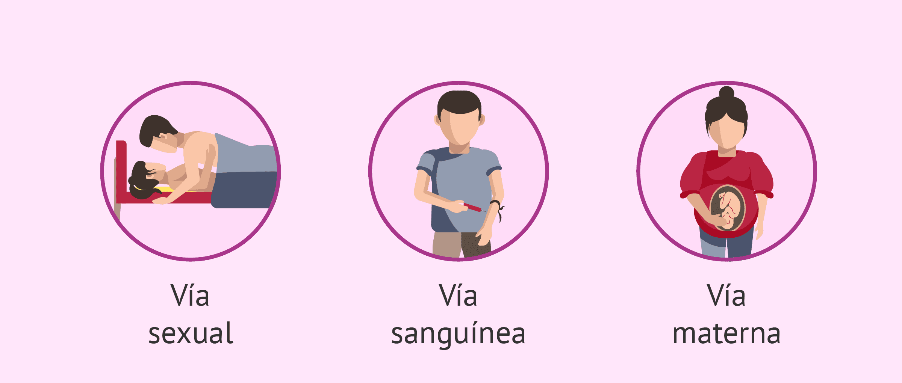
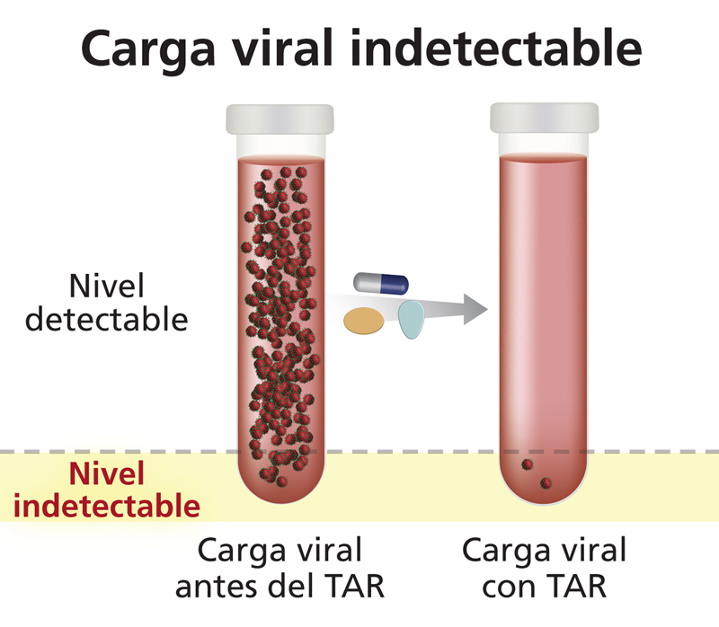

üî¨ ¬øC√≥mo funciona? El VIH entra en el cuerpo a trav√©s de fluidos como la sangre, el semen, los fluidos vaginales y la leche materna.
Infecta los linfocitos CD4, los usa para replicarse y luego los destruye.
Debilita el sistema inmunológico, dejando al cuerpo vulnerable a infecciones y enfermedades graves.
⚠️ ¿Cómo se transmite?
✅ Relaciones sexuales sin protección
✅ Compartir agujas o jeringas
✅ Transfusiones de sangre (muy raro hoy en día por los controles)
✅ De madre a hijo durante el embarazo, parto o lactancia
üìå NO se transmite por abrazos, besos, sudor, lágrimas, compartir utensilios o estar cerca de una persona con VIH.

üíä ¬øTiene cura? No, pero s√≠ tiene tratamiento. Los medicamentos antirretrovirales (TAR) permiten que las personas con VIH tengan una vida larga y saludable, manteniendo el virus bajo control y reduciendo el riesgo de transmisi√≥n.
ü¶† ¬øEs lo mismo que el SIDA? El VIH es el virus, mientras que el SIDA (S√≠ndrome de Inmunodeficiencia Adquirida) es la etapa avanzada de la infecci√≥n, cuando el sistema inmunol√≥gico ya está gravemente da√±ado.
Con tratamiento adecuado (antirretrovirales), el VIH puede controlarse y evitar que llegue a SIDA.
Carga Viral Indetectable = Intransmisible (I=I)
Cuando una persona con VIH sigue correctamente su tratamiento con antirretrovirales (TAR), la cantidad de virus en su sangre puede reducirse a niveles indetectables en pruebas estándar.
üìå ¬øQu√© significa esto?
✅ No desarrolla SIDA.
✅ Su sistema inmunológico se mantiene fuerte.
✅ No puede transmitir el virus a otras personas, ni siquiera por vía sexual.
üî¨ Este concepto, conocido como "Indetectable = Intransmisible (I=I)", está cient√≠ficamente probado y es una de las mayores revoluciones en la lucha contra el VIH.
üí° En resumen: Con el tratamiento adecuado, una persona con VIH puede llevar una vida normal y sin riesgo de transmitir el virus.
